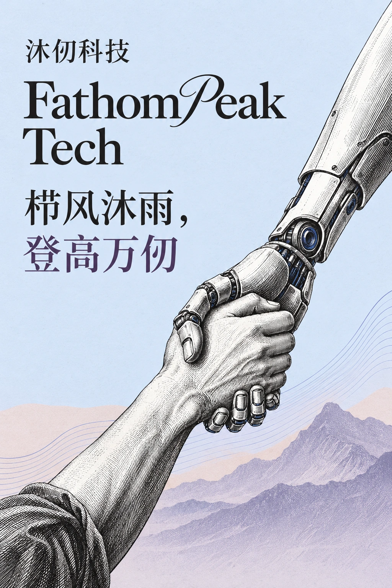

从任务接入到交付结算
接入需求
客户确认模型、用量与交付时限，平台提供接入、报价和订单管理。
绿色词元交易平台调度资源
结合任务要求、电力预测与节点状态，安排计算资源和运行时段。
Tapestrix · NetWeaver执行推理
部署在场站或机房的 FPTM 一体机运行模型，提供推理算力。
FPTM 系列交付结算
交付模型调用结果，记录用量、费用与能源信息。
可追溯低成本、高可用、全兼容。
GLM、DeepSeek、Qwen、MiniMax 一个端点接入，兼容 OpenAI 与 Gemini 原生格式。一体机部署在电站旁，用富余绿电生产词元，为 AI 企业提供低成本、可追溯的推理服务。
风电和光伏的电，越来越多地送不出去；同一时刻，大模型在排队、在涨价。电多的地方没有算，算缺的时候正是电多的时候。
我们觉得这不该是常态。所以把算力搬到了电站旁边。
一行地址，接入 GLM、DeepSeek、Qwen、MiniMax 等主流模型；OpenAI 与 Gemini 调用格式都兼容。
浏览模型市场 →词元用电站富余的绿电生产，成本更低。企业报价低至公开价 5 折：GLM-5.3 输出每百万词元 28 元 → 14 元。
了解计费条件 →每笔订单一张产地卡：哪座光伏、风电或水电站，哪个时段，用了多少绿电，可用于 ESG 披露与绿色采购。
了解节点合作 →主要承接可延后、可批量的推理任务。
与某新加坡客户签署。
已签约与某清华系 AI 企业签署，覆盖 Qwen、GLM、Gemma 等开源模型。
已签约绿色词元供应、大模型推理优化与一体机部署。
已达成战略合作截至 2026 年第三季度，其中海外订单占比超 83%。
已签约拟作为首个集中式光伏算电协同试点。
已签战略协议 · 技术方案设计中合计约 100MW，拟开放用于部署词元一体机。
已签战略协议拟与某上市公司共同推进。
已达成战略合作已与项目方就试点方案深入沟通。
初步合作意向企业报价 5 折 – 8.2 折
从一次真实任务测试开始
客户确认模型、用量与交付时限，平台提供接入、报价和订单管理。
绿色词元交易平台结合任务要求、电力预测与节点状态，安排计算资源和运行时段。
Tapestrix · NetWeaver部署在场站或机房的 FPTM 一体机运行模型，提供推理算力。
FPTM 系列交付模型调用结果，记录用量、费用与能源信息。
可追溯统一接口接入主流模型，按词元用量计费。面向开发者和机构，主要承接非实时或弱实时推理。
在本站获取 API Key，按接入文档配置地址、模型名称与调用参数。查看开通流程 →
个人与开发者说明应用场景、模型需求和预期用量，用样例负载测试后报价采购。联系销售 →
企业与机构将模型服务用于自有应用或授权渠道分发，价格与结算按协议执行。联系销售 →
渠道商与平台方出海运营主体持中央网信办词元出海业务批复，海外团队合规地用上中国模型。
海外客户目录与输出参考价来自沐仞模型平台。DeepSeek 为空闲时段价格，MiniMax-M3 为 ≤512k 档。
结合节点资源、电力供给与任务要求评估成本。
将算力、电力、网络与存储纳入协同管理，支持资源观测、预测和任务安排。
观测 GPU 与进程状态，管理异构资源，并结合任务负载评估能耗。
智能体一结合场站数据预测发电与用电条件，为成本评估和任务安排提供依据。
智能体二根据任务时限、网络状态与资源供给，选择合适节点并协调任务运行。
智能体三调度基座按项目交付，通过企业合作入口说明需求。项目合作 →
项目合作面向场站、机房与既有节点的推理设备，支持异构 GPU 配置及风冷、液冷方案。
5090 / RTX Pro 6000，8 卡或 16 卡，可上架标准机房。
风冷无需机房恒温恒湿，适配电站环境，部署即用。
液冷无需机房建设，单箱可达 300P 算力，无氟液冷。
集装箱分布式与集中式光伏电站、风电场、水电站、既有闲置算力中心和边缘算力节点。
部署场景利用适用的富余电力运行 AI 推理任务，拓展电力消纳与价值实现方式。
核心用途同一台设备混插不同型号 GPU，统一调度、协同计算。
核心能力资产方可采购设备并合作运营；企业、科研机构与高校可在机房或实验室部署。联系销售 →
采购与部署资产方投入场地、电力或设备；沐仞提供接入、调度、运营与词元销售，双方按协议分享收益。
一体机部署在光伏、风电、水电等新能源场站。
新能源场站提供技术方案、节点接入、任务调度、设备运营与词元销售服务。
沐仞负责按协议约定的比例和周期分配词元销售收益。
收益既有算力中心也可以接入交易平台。电站合作页 →
第三方算力中心沐仞的公开报道与公司动态。
每周一封：新接入的电站、模型上新与价格变动。
创始人路畅为清华大学工学直博生，研究方向为算电协同调度，入选中国 AI U25 创业者榜单。他连续创业六年，曾任某 AI Infra 企业 COO，参与青海省国网算电协同调度项目，并入选清华大学—麻省理工学院 Energy Ventures 交换项目。在人工智能基础设施与能源基础设施长期分立发展的格局下，路畅提出并构建了"算电协同、词元直供"的全新范式：不再把电力输送到算力所在之处，而是把算力任务调度到绿电所在之处。
基于这一思路，公司自研 TAPESTRIX 异构调度架构，构建与能源系统深度耦合的分布式算网。沐仞词元一体机部署于光伏、风电、水电等新能源电站，将富余绿电就地转化为绿色词元，再经由绿色词元交易平台交付全球 AI 企业。平台、基座、一体机三层产品形成"平台接单、基座调度、一体机生产、平台交付"的完整闭环，每笔订单均可追溯至电站、时段与能源消耗。
核心团队由清华大学、北京大学、南洋理工大学、武汉大学等高校的博士与研究者，以及来自微软亚洲研究院、字节跳动、英伟达等企业的技术骨干组成，研究成果发表于 ASPLOS、ISCA、OSDI 等体系结构与系统领域顶级会议。
以绿色能源承载全球计算。
扎根中国算电基础，服务全球计算需求。短期以新能源电站与全球 AI 企业为两端，与头部能源国企落成算电协同试点，形成词元直供的商业闭环。中长期建设覆盖中国、东南亚、中东、欧洲与北美的全球分布式算网，通过算力任务的时空迁移消纳多地绿电，形成"算电双轮驱动、时空互补调度"的全球算力潮汐体系。
从一座电站，到一张算网，再到全球算力潮汐
绿色词元直供是地基。路线图在其上逐层构建：先把电站侧算力变成可交付的服务，再让调度系统统一指挥算力与电力，最终形成跨地区、跨时区的全球分布式算网。
栉风沐雨，登高万仞
以长期主义攻克算力与能源交叉领域的硬核问题，在难而正确的方向上持续投入。
以可计量、可追溯的数据作为决策与对外承诺的依据。
深入电站与机房一线，在真实场景中验证技术、解决问题。
与能源企业、产业资本、高校与客户共建算电协同生态，共享增长收益。
公司两个月内完成天使轮、天使+轮两轮千万级融资，股东包括能源侧与产业侧上市企业、清华系资本及社会资本。
团队累计获得各类荣誉 40 余项。
我们正在招人
异构调度算法、推理系统、分布式系统、能源系统建模、海外市场与产品等方向均有开放职位。年轻团队，硬核问题，快速成长。
加入我们 ↗HR 联系：fathompeak@163.com
fathompeak@163.com 企业采购、海外服务与电站合作，写信说明应用场景、需求规模和联系方式。
北京市海淀区清河中街 66 号院 1 号楼。研发在北京海淀与深圳南山；出海运营主体设在广东省汕头市。
准备 API Key、接入地址与模型名称，再用小规模请求验证接口和返回结果。
从本站的 获取 API Key 入口开通账户、管理密钥。
curl、Python 与 Node.js 任选其一，Python 与 Node.js 使用 OpenAI 官方 SDK。
调用成功后核对返回结果、用量与计费明细，以及订单的能源记录。
支持自定义 OpenAI 兼容服务商的桌面与网页客户端，填入接入地址、API Key 和模型名称就能使用。
设置 → 模型服务 → 添加，提供商类型选 OpenAI。API 地址填 https://YOUR_API_HOST，Cherry Studio 会自动补全 /v1 路径；填好后核对输入框下方显示的完整请求地址。再填 API 密钥，添加模型名称。
设置 → AI 服务商 → OpenAI，填入 API Key，API 代理地址填 https://YOUR_API_HOST/v1，然后获取模型列表或手动添加模型名称。
新增自定义供应商，按要切换的工具选择接口格式（沐仞兼容 OpenAI 与 Gemini 原生格式），填入请求地址和 API Key，保存后切换到这个供应商。
设置 → 模型服务商 → 添加自定义服务商，类型选 OpenAI，API URL 填 https://YOUR_API_HOST/v1，填入 API Key 后拉取或添加模型。
各客户端的菜单名称会随版本变化，以客户端当前版本为准。接入地址见控制台。
按接口文档使用 Authorization: Bearer 头传入 API Key，在控制台创建与撤销。
建议按项目管理 API Key，用量与成本按项目归集。
发现密钥泄露时，立即撤销并更换，检查相关调用记录。
按 Token 用量计费，单位为 ¥ / 百万 Token，输入、输出与缓存分别计价。
核对订单的节点、用电来源与计量信息。减排量须有明确计算边界和数据依据，不能仅按词元数推算。
先检查状态码与错误信息，再按接口文档处理。
| 码 | 原因 | 怎么处理 |
|---|---|---|
| 401 | Key 无效或已吊销 | 到控制台重新创建 Key |
| 429 | 触发限流 | 遵循 Retry-After 重试；需要更高并发请联系商务 |
常见错误码与处理方式。
接入测试时，同时测响应时限与并发。
先区分实时与可延后任务，可延后的任务交给调度排到电最多的时段。
可用率与故障补偿写进服务协议。
从模型接入、选型测试到节点合作与采购评估，按当前任务选择指南。
每周一封：新接入的电站、模型上新与价格变动。
提供应用场景、模型需求、预期用量与样例负载，测试通过后报价采购。
面向自有应用与渠道分发，价格与结算按协议执行。
出海运营主体持中央网信办词元出海业务批复，海外团队合规地用上中国模型。
| 个人 | 企业 | |
|---|---|---|
| 注册 | 选个人账户 | 联系销售 |
| 付款 | 在线充值 | 在线充值 / 对公转账 / 月度结算 |
| 发票 | 电子发票 | 增值税发票 |
| 账号 | 1 个 | 主账号 + 子账号 |
| 价格 | 公开价 | 公开价或按量报价 |
明确任务、模型、用量与响应要求，准备可测试的样例负载。
核对测试结果、计费项、单价及服务范围。
约定合同、权限、交付范围与验收标准。
接入后核对用量与账单，按约定周期验收和结算。
有。出海运营主体在广东汕头，持中央网信办词元出海业务批复，合规文件可在签约前提供。
来数加工在境内合规处理；签约前可做数据与安全评审。
可以。说明采购主体、发票类型与付款方式，商务对接合同与结算。
可用率、时延、并发及支持范围须经测试并写入协议。平台主要面向非实时或弱实时推理，不以本页说明替代 SLA。
可以。一体机可部署在客户场站、机房或实验室，由沐仞远程运营。 电站合作 →
请在下方表单说明资源规模、接口要求与任务类型。
说明业务场景、模型与预期用量，便于安排需求评估。
按 Token 计费，充值后从余额扣费。学生和老师有教育优惠，企业可以签合同、开发票。
学校邮箱或学生证认证后生效
了解教育优惠先测试，再报价采购
目录与输出参考价来自沐仞模型平台。DeepSeek 为空闲时段价格，MiniMax-M3 为 ≤512k 档。
| 模型 | 厂商 | 类型 | 上下文 | 输出参考价 ¥ / 百万词元 |
|---|
输入、缓存等其余计费项按模型分别计价，以控制台模型列表为准。
每次请求按实际消耗的 Token 计费，没有月费。
在控制台在线充值，余额以人民币显示。企业客户可以对公转账或按月结算。
每次请求按输入、输出 Token 分别计价，从余额扣费。
在控制台查看每个模型的用量、费用和订单能源记录。
费用 = 输入 Token × 输入单价 + 输出 Token × 输出单价
例：GLM-5.3-Flash 生成 100 万个输出词元，输出部分约
选模型，填入输入和输出用量，按本页输出参考价估算。
填写输入单价后计入输入部分。
输出单价 ，取自上方模型价格表。输入单价以控制台模型列表为准。估算不含教育价与合同价。
价格由模型、用量、节点资源和交付时限决定。富余绿电时段的词元更便宜。
按模型分别计价。本页列出输出参考价，输入、缓存等计费项以控制台模型列表为准。
有。登录后申请教育认证教育账户，或上传学生证、在读证明完成认证。 教育优惠 →
可以。说明采购主体、发票类型与付款方式，商务对接合同与结算。
认证通过后生效，价格在控制台模型列表显示。
注册时选择「教育」，学校邮箱和常用邮箱都可以。
edu.cn 邮箱自动识别；没有学校邮箱，在控制台上传学生证、在读证明或教师工作证。
认证通过后创建 Key，调用按教育价从余额扣费。
把模型接进作业里的小程序、数据分析或毕业设计原型，按实际用量付费。
批量处理文献、数据标注和模型对比实验，可延后的任务排进富余绿电时段。
黑客松、学科竞赛和社团项目，用一个账户管理多个项目的 Key。
主账号管理额度，子账号分给学生，按学期结算并开具发票。
可以用常用邮箱注册，再在控制台上传学生证、在读证明或教师工作证，人工审核后生效。
是的。模型目录、接口和控制台完全相同，只是按教育价计费。
可以。按课程或实验室统一开通，主账号管理额度和子账号，按学期结算。

管理 API Key、用量与账单。
By continuing, you agree to our Terms of Service and Privacy Policy.
遇到问题？ 联系我们
按项目创建，完整 Key 只显示一次。
接入地址兼容 OpenAI 格式，换成你的 Key 就能调用。
在线充值后按实际用量扣费。
按项目创建 Key，存进安全的配置里。完整 Key 只在创建时显示一次。
复制并保存这个 Key，关闭后无法再次查看。
| 名称 | 状态 | Key | 额度 | 分组 | 可用模型 | 创建时间 | 操作 |
|---|
上方按模型汇总，下方逐条列出每次请求。
| 模型 | 请求次数 | 输入 Token | 输出 Token | 费用 |
|---|
| 时间 | Key | 模型 | 输入 Token | 输出 Token | 费用 | 算力节点 | 绿电折扣 |
|---|
算力节点是处理该请求的节点；绿电折扣是该请求结算时适用的绿电折扣。
每笔订单附一张产地卡：哪座电站、哪个时段、用了多少电、产出多少词元。做绿色采购、ESG 披露或跨境业务时，手里有一份可追溯的数据。
调用完成后，平台为每笔订单生成一张产地卡，包含以下字段。
余额以人民币显示，按实际用量扣费。
| 时间 | 订单号 | 支付方式 | 金额 | 状态 |
|---|
企业客户可以对公转账或按月结算，邮件 fathompeak@163.com。
其他用户通过你的邀请链接注册后，你可以获得邀请奖励。
账户类型在注册时选择，同一个控制台。
邀请同事加入，额度和账单由主账号统一管理。
登录密码、两步验证、通行密钥和访问令牌。
建议定期更换，不要与其他网站共用。
登录时除密码外，还要输入身份验证器应用生成的 6 位动态码。
未开启用设备的指纹、面容或屏幕锁登录，不用输入密码。
未添加用于以程序方式管理账户，与调用模型的 API Key 不同。完整令牌只在生成时显示一次。
复制并保存这个令牌，关闭后无法再次查看。生成新令牌后，旧令牌失效。
| 时间 | IP | 设备 | 登录方式 | 结果 |
|---|
| 时间 | 操作 | 对象 | IP |
|---|
资质与备案、数据处理方式和法律文件。
来数加工在境内合规处理；签约前可做数据与安全评审。
签约前需要数据与安全评审？
北京沐仞科技有限公司（以下简称「沐仞科技」或「我们」）运营「拼好算」算电协同词元交易平台及相关服务（以下简称「本服务」）。我们重视个人信息与业务数据安全。请您在使用本服务前仔细阅读本《隐私政策》。如您不同意，请停止使用本服务。
为提供安全、稳定的词元交易与中转服务，我们可能基于以下目的处理信息：
在适用法律允许的范围内，您可查询、更正、删除个人信息，撤回同意，注销账号，或获取个人信息副本。您可通过控制台或客服渠道提交请求，我们将在核实身份后于合理期限内处理。
本服务主要面向具备完全民事行为能力的个人及企业用户。未成年人请在监护人同意与指导下使用。如发现误收集未成年人信息，我们将尽快删除。
我们可能适时修订本政策，并在平台公布。重大变更将以更显著方式提示。若更新后您继续使用本服务，即表示您接受修订后的政策。
如对本政策或个人信息处理有疑问、投诉或权利请求，请通过本平台公示的客服或联系渠道与我们联系。
相关页面：合规与安全
提示条款：
欢迎使用北京沐仞科技有限公司（以下简称「沐仞科技」或「我们」）运营的「拼好算」算电协同词元交易平台及相关服务（以下简称「本服务」）。
请您在注册、登录或使用本服务前，仔细阅读并充分理解本《用户服务协议》（以下简称「本协议」），尤其是免责、责任限制、法律适用与争议解决条款。除非您已阅读并接受全部条款，否则请勿使用本服务。您一旦勾选同意、注册、登录或实际使用本服务，即视为接受本协议约束。
相关页面：合规与安全
汇总模型服务、节点进展与产品更新。
填写邮箱即可订阅；往期内容见新闻页。